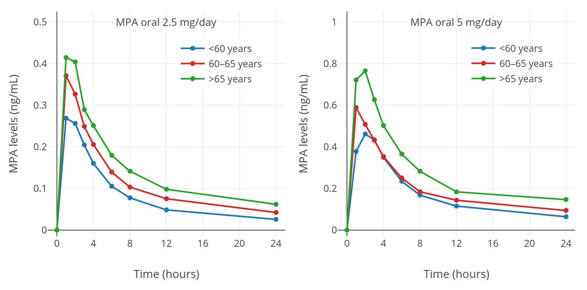

不会起名の捌拐玖捌🍥(二代目互fo寻回中)
@CCA8798suki
@realMlgmXyysd 听起来确实是不错的用药方案，MPA也能直接买到；
至于螺内酯的话，有的人没有了解其作为保钾利尿药的能效，所以出现上述问题
MPA的药代动力学数据和吸收看起来都不错(下图)，我想向您明确一下有没有先前使用过MPA代替CPA作为抗雄制剂的案例呢，或者说能否给我一点资料让我去更新下wiki的数据

MlgmXyysd🐱💕
@realMlgmXyysd
@CCA8798suki cpa 也会抑制乳房发育的，而且安全剂量只有 2mg/d，平替可以用 mpa 作为更好的选择，更便宜，副作用也更少。另外，螺内酯并不拉，100mg 就可以抗雄，且配合足够的雌激素可以有效拮抗利尿效果